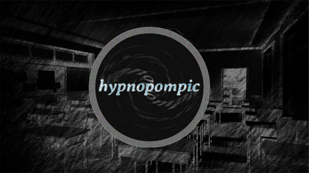

Hypnopompic
Do que Se trata esse Mod?? AVISO: Devo jogar este mod? Não, a menos que você tenha jogado os mods chamados: -Disappearance -Somnium -Don't Se você quiser jogar este mod, você terá que jogar esses primeiro.
⬇ Download
Do que Se trata esse Mod?? AVISO: Devo jogar este mod? Não, a menos que você tenha jogado os mods chamados: -Disappearance -Somnium -Don't Se você quiser jogar este mod, você terá que jogar esses primeiro.
⬇ Download